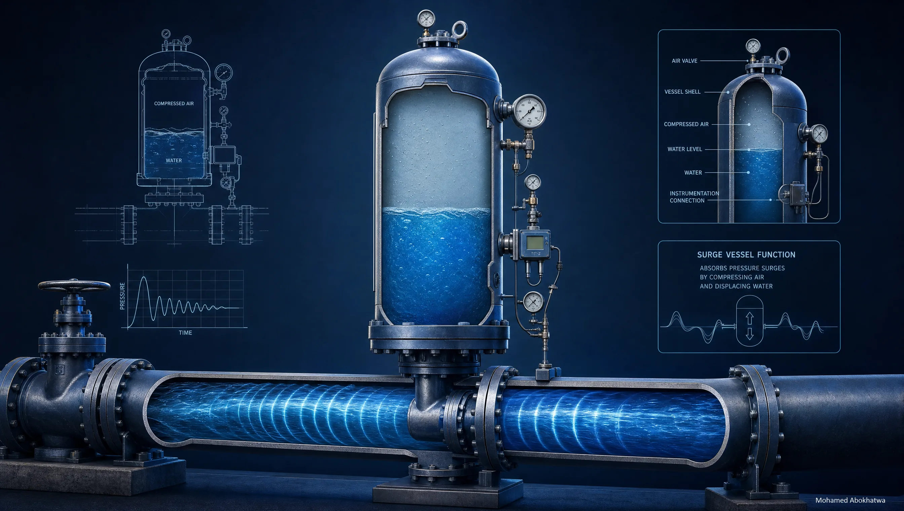

Effect of Control Valve Closure Time on Water Hammer Intensity

Sizing the Hydropneumatic Surge Vessel in Water Transmission Pipelines

The Pre-Charge Pressure of the Surge Vessel — How One Number Changes Everything

Mastering Control Valve Transients in Bentley HAMMER: FCV vs. PRV

Demystifying Boundary Conditions: Reservoir vs. Tank in Bentley HAMMER

Beyond Static Design: Integrating Transient Analysis with SCADA for Smart Pipelines

Strategic Air Admission in Water Transmission Networks: A Dual Perspective

From Modeling to Procurement: A Guide to Check Valve Analysis in Bentley HAMMER

Surge Analysis: An Essential Risk Mitigation Strategy for Pressurized Pipelines